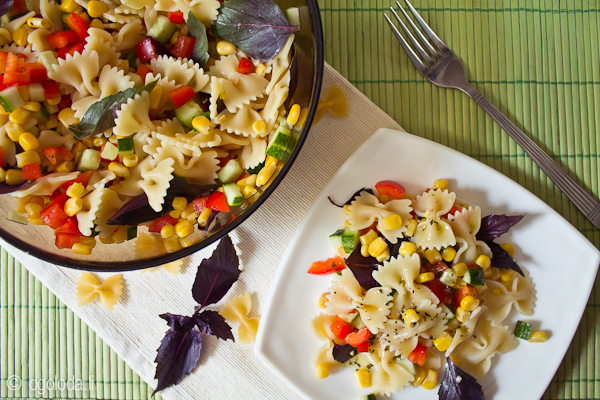
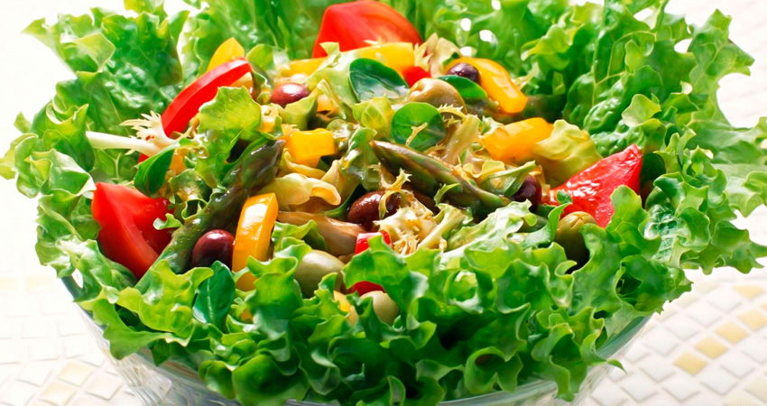
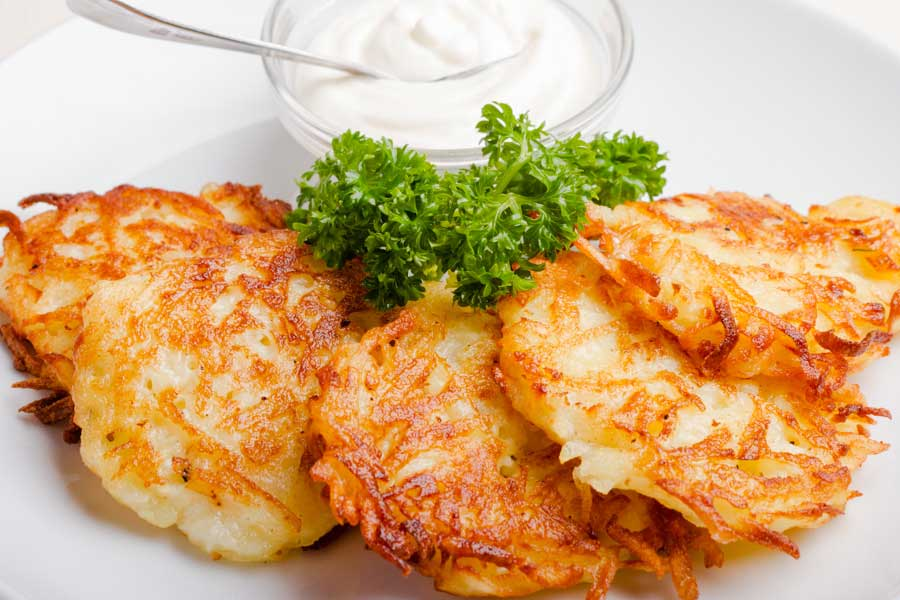
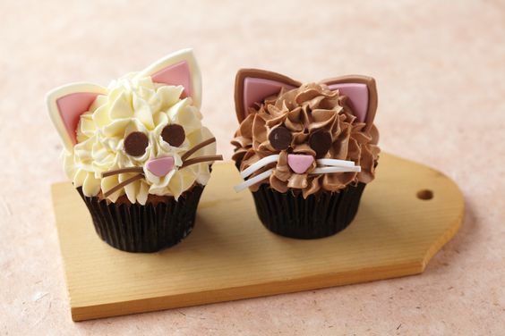
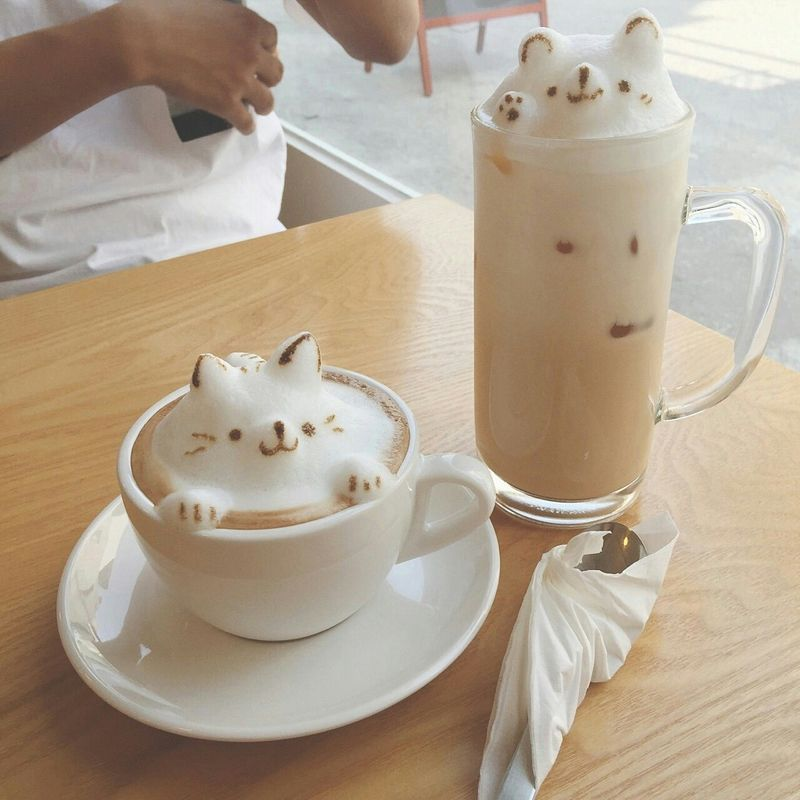
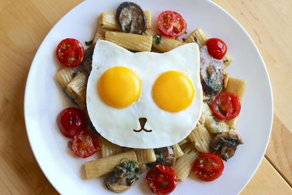

Вегетарианская кухня
Вегетарианская кухня — кухня, которая объединяет в себе как традиционно вегетарианские блюда разных кухонь мира, так и адаптированные версии изначально невегетарианских блюд. Она характеризуется прежде всего отсутствием мясной пищи.Как и вегетарианство, вегетарианская кухня имеет несколько разновидностей и в целом характеризуется отсутствием убойной пищи (мяса, рыбы, птицы, морепродуктов животного происхождения и всех продуктов, изготовленных из них). В зависимости от вида вегетарианства в вегетарианской кухне могут как присутствовать, так и отсутствовать некоторые из следующих продуктов: молочные продукты, яйца, мёд.Веганская кухня исключает все продукты животного происхождения.
  Кухня в котокафе
Котокафе – это тип заведения, в котором постоянно проживают несколько кошек, к которым можно прийти в гости, пообщаться и поиграть. Родился этот тип заведения на Тайване, в 1997 году. Мировую популярность приобрел в Японии. Сейчас в мире более 250 котокафе. С гордостью говорим, что первое котокафе в Европе открылось в России.У нас есть печенье и конфеты, которые входят в стоимость времени, а также вкуснейшие сэндвичи и тортики за отдельную плату.Блюда в кото-кафе обычно имеют форму чего-то относящегося к кошачим.
  